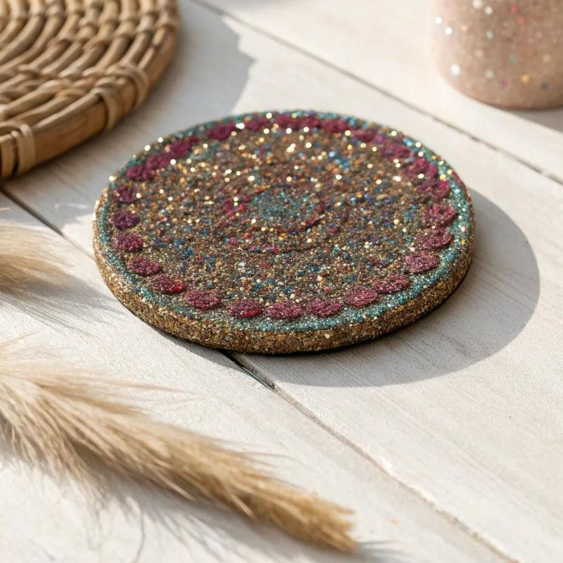
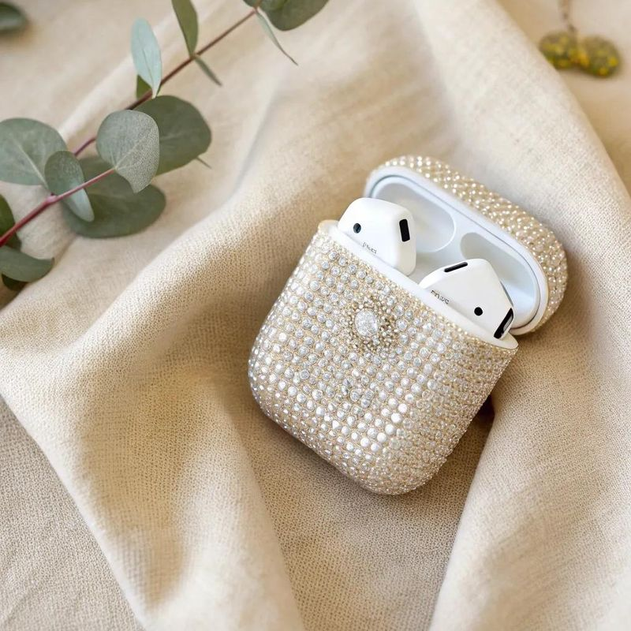
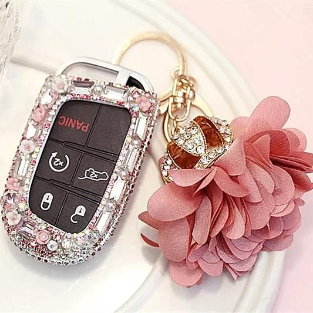
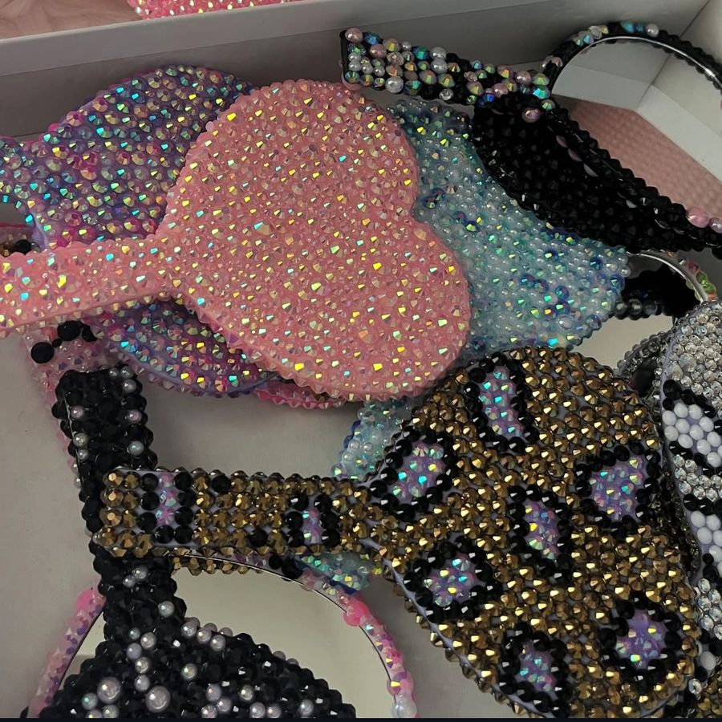

Over deze Workshop
Wat is bedazzelen?
Bij bedazzelen bedekt u een voorwerp met kleine, glinsterende steentjes. Steentje voor steentje maakt u van iets gewoons een sprankelend pronkstuk. U kiest zelf de kleuren en het patroon: van een subtiel randje tot een voorwerp dat helemaal schittert.
Onze ervaren makers laten u stap voor stap zien hoe het werkt: hoe u een ontwerp kiest, hoe u de kleine steentjes handig oppakt en vastzet, en hoe u zorgt voor een mooi en strak resultaat. Zo ontdekt u alle kneepjes van het vak, terwijl u in een gezellige sfeer aan uw eigen ontwerp werkt.
De workshop geven wij zowel bij u op locatie als in ons eigen atelier in de Betuwe. Komt u liever naar ons toe, dan ontvangen wij u graag in onze volledig ingerichte werkruimte. Wilt u dat wij langskomen, bijvoorbeeld voor een teamuitje op kantoor of een feestje bij u thuis? Dan brengen wij alle materialen gewoon mee.
Wat Kunt U Bedazzelen?
Bijna alles kan glinsteren. Tijdens de workshop kiest u bijvoorbeeld uit:
 Aanstekers
Aanstekers Mokken
Mokken Onderzetters
Onderzetters Potten
Potten



Neem uw eigen voorwerp mee
Heeft u thuis iets wat wel wat glitter kan gebruiken? Neem het gerust mee en bedazzel uw eigen telefoonhoesje, fotolijstje of een ander voorwerp dat u dierbaar is. Vermeld in uw aanvraag wat u wilt meenemen, dan zorgen wij voor de juiste steentjes en materialen.

 Creatieve Vrijheid
Creatieve Vrijheid
Geen ervaring nodig. Onze workshops zijn ontworpen voor deelnemers van alle niveaus.
Kies Uw Kleuren
Van chique zilver en goud tot alle kleuren van de regenboog: u bepaalt zelf het ontwerp.
Mee Naar Huis
U gaat naar huis met uw eigen sprankelende creatie, een uniek cadeau of pronkstuk.
 Hapje & Drankje
Hapje & Drankje
Creëer in een ontspannen, gezellige sfeer, ideaal voor groepen en feestjes.
Wat Maakt Deze Workshop Bijzonder?
Bedazzelen is laagdrempelig en verrassend verslavend: iedereen kan het, en het resultaat is altijd een feestje. Terwijl u steentje voor steentje bezig bent, ontstaan er vanzelf leuke gesprekken aan tafel. Geen twee creaties worden hetzelfde, en u maakt iets wat u echt gebruikt. Of u nu op zoek bent naar een origineel teamuitje, een vrolijk vrijgezellenfeest of gewoon een ontspannen middag: deze workshop biedt alles.
 Praktische Informatie
Praktische Informatie
De workshop Bedazzelen in het kort:
- Duur: 2 uur
- Professionele begeleiding
- Inclusief materialen (voor ieder wat wils)
- Voor beginners en gevorderden
- De kunstenaar maakt sfeerfoto's en een groepsfoto na afloop
U hoeft alleen uw creativiteit mee te brengen, of uw eigen voorwerp als u dat wilt! De workshop kan voor groepen worden georganiseerd en wij geven hem zowel op locatie als in ons eigen atelier in de Betuwe. Voor meer informatie over data, prijzen en het reserveren van uw plaats, neem contact met ons op. Wij beantwoorden graag al uw vragen!
Klaar om te schitteren?
Reserveer nu uw plek en kom uw eigen voorwerp bedazzelen. Wij helpen u graag met alle informatie over beschikbare data en prijzen.